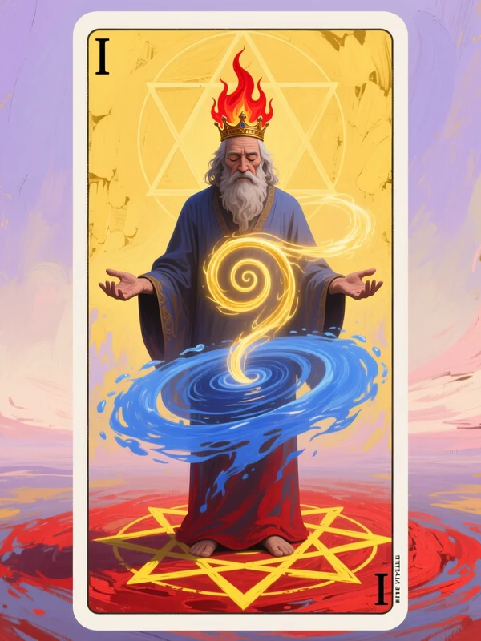

Arcano Maggiore: I - Il Mago (forma matura) Archetipo Junghiano: Il Saggio + L'Eroe Integrato LIVELLO MEDIO
L'archetipo junghiano

I - Il Saggio Maturo: Maestria e saggezza
L'Immagine Archetipale
Il Mago, quando matura, diventa il Saggio — non solo conosce gli strumenti, ma comprende perché esistono e come usarli con saggezza.
Secure Medio significa che non stai più "imparando a volare" — stai volando naturalmente.
L'Archetipo del Saggio
Il Saggio rappresenta la saggezza acquisita, non innata. Hai attraversato il fuoco (il Matto, l'Amante Ferito, il Mago apprentice) e sei emerso con comprensione.
La Maestria senza Sforzo
Il Saggio non "cerca" di essere consapevole. La consapevolezza è diventata il suo modo di essere.
Il Corpo Archetipale
Il corpo del Saggio:
Petto aperto, respirazione tranquilla
Assenza di nodi cronici
Accesso facile ai sentimenti (anche vulnerabilità)
Sensazione di "radicamento" nel corpo
L'Ombra Integrata
Hai riconosciuto la tua ombra (i momenti di insicurezza, i dubbi) e l'hai integrata: riconosci quando hai bisogno di supporto e quando puoi stare da solo, e scegli consapevolmente.
Il profilo nel modello a gradienti
Nel modello a gradienti, Secure Medio significa:
Ansia di Attaccamento: BASSA (0-2/10)
Evitamento: BASSO (0-2/10)
Livello: MEDIO — Secure solido
Caratteristiche del Livello MEDIO
Base sicura stabile e affidabile
Fiducia genuina nel partner e in te stesso
Rari momenti di insicurezza
Intimità e spazio ben equilibrati
Comunichi i bisogni chiaramente
Nel Corpo (Sensazioni Fisiche)
Petto aperto, respirazione tranquilla
Assenza di nodi cronici
Accesso facile ai sentimenti (anche vulnerabilità)
Sensazione di "radicamento" nel corpo
Pattern Relazionale
Conflitti rari, quando accadono si risolvono rapidamente
Sessualità consapevole e soddisfacente
Amicizie stabili e multiple
Indipendenza e interdipendenza bilanciate
Trigger
Rarissimi; quando accadono, il corpo sa come rispondere
Eventi di vita significativi (malattia, perdita) provocano ansia situazionale (non di attaccamento)
La consapevolezza archetipale
Il Primo Passo della Consapevolezza
La consapevolezza è diventata il tuo modo di essere. Non "cerchi" di essere consapevole — sei consapevole.
Timeline Archetipale della Consapevolezza
Continuo: Il Saggio approfondisce la sua comprensione dell'attaccamento come fenomeno universale
Il viaggio è ora di approfondimento della natura della saggezza e della maestria integrata
L'Integrazione Archetipale
Il Saggio ha imparato a usare i suoi strumenti interiori con maestria. Non elimini i momenti di insicurezza — impari a riconoscerli e a gestirli con saggezza.
Quando raggiungi Secure Alto, diventi L'Illuminato che ha perfezionato la trasmutazione finale della consapevolezza.
Esercizi specifici per Secure Medio
Frequenza: Mensili, pratica di mantenimento
Terapia: Non necessaria, ma può essere utile per approfondire
Esercizi Consigliati
Pratica di consapevolezza (mantieni il livello, settimanale, 10-15 min)
Mantieni la connessione con il presente
Osserva i pensieri senza giudizio
Riconosci i momenti di insicurezza
Focusing mensile (continuo sviluppo, 15-20 min)
Approfondisci la comprensione dell'attaccamento
Esplora nuove profondità della consapevolezza
Mantieni la connessione con la saggezza corporea
Meditazione su compassione (verso gli altri con insicurezza, settimanale, 10-15 min)
Pratica la compassione verso chi ha insicurezza
Riconosci che tutti hanno un percorso
Mantieni l'umiltà nella saggezza
💡 Nota sulla Consapevolezza:
Secure Medio è un momento di maestria integrata. La consapevolezza è diventata il tuo modo di essere. Non elimini i momenti di insicurezza — impari a riconoscerli e a gestirli con saggezza.